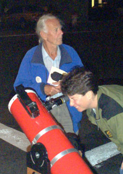
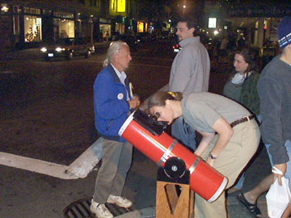

SJAA
Ephemeris
|
SJAA Ephemeris |
On the Sidewalk with JohnMorris Jones |
"Come look at the moon!"
The frail gentleman with the white pony tail stands next to a small red tube that looks like a mortar or something dangerous. It's pointed at the moon. Some people shy away from the odd sight; just another crazy man on a San Francisco street corner. But there's something about the gentle expression on the old man's face, something inviting them to pause for a moment and look into the strange device next to him.
This is John Dobson's element, the thing he loves the most -introducing people to the universe. The ones who stop and look say, "Oh wow!" - a familiar sound to any of us who've set up our telescopes on the sidewalk.
"That's how the moon would look an hour before you land on it," says John. It doesn't matter whether it's true or not, it's a fascinating image to contemplate; it stirs the imagination and the memory of a time when someone actually might have been an hour from landing on the moon.
"That's so cool!" says a young viewer in moon-thrall.
"Oh no, that's not cool at all," inserts John. "Are you talking about the light side or the dark side? On the light side it's hotter than boiling water, but on the dark side it's really frigidly cold." The universal exclamation gives John his opportunity to teach them something before they have a chance to escape.
The dobsonian telescope, now so ubiquitous that the name isn't capitalized, was designed to rest on a sidewalk. Everywhere we look in astronomy we find variations on John's original "user-friendly" sidewalk telescope. In terms of view for the dollar, nothing can beat this simple way to mount a classic newtonian reflector. I'd been reading for years about how John founded the San Francisco Sidewalk Astronomers, but it never occurred to me that one evening I might be sharing a street corner with John himself showing the night sky to whoever would look.
|  |
Soon there's a line of people waiting for a glimpse through the eyepiece. John tirelessly gives them tidbits of knowledge and things to think about. He holds a stack of folded one-page fliers, and each viewer is eager to take one. So different from the commercial notices being handed out not far away, this flier serves to remind people a little about the universe they live in.
Nearby Jane and I have set up her 12.5" truss-tube dob. Jupiter is beginning to clear the building tops and we want to offer a different target. The seeing is terrible - Jupiter looks like a blob of fuzzy ice cream with four white nonpareils that fell off the sundae. The people don't mind. "Look, you can see its moons!" they exclaim.
If you ask, John will talk about telescopes, optics, mirrors and the like. He still teaches classes at the Randall Museum and the California Academy of Sciences on grinding mirrors and making a telescope.
What John would really rather talk about is cosmology. He has spent most of his 84 years studying the physical universe and contemplating how we came to be. He is a firm holdout for a steady-state universe - a universe which didn't spring from nothing. Prominently displayed on his jacket is a button that says, "Nothing doesn't exist."
But here on the street corner, there's not much time or opportunity to talk about the big issues. If he can get a few more people to see the universe with their own eyes, he knows they'll start to think about these things for themselves.
That doesn't stop him from planting a few seeds for thought. On another evening with John at 24th and Noe, Jane and I were showing Saturn in the big 12.5" while John had Jupiter in the 6".
The lines were long, and while people got a look at Saturn, one fellow said to me, "Is that a planet or a star?" I told him he was pointing at the planet Jupiter.
"That man over there said it's a star." He was referring naturally to John Dobson. He had just visited John for a look at Jupiter. What am I to say? John loves to be challenged on a subject like that, and loves to provoke a reaction or a question.
|  |
"It's not a planet, it's a star," John was saying, inviting anyone willing to challenge him and learn more about what really makes a star or a planet.
As the evening goes on, the atmosphere on the San Francisco street corner becomes joyful. More people decide to stay for a while and have second or third looks.
A police car pulls into the red-curbed space by the fire hydrant, and a couple of burly SFPD officers step out. But there's no crime to stop here - they just want a look through the telescopes too.
A moment later, a smiling man in a Muni driver's uniform gets a look at Jupiter and Saturn and says, "Thank you!" and dashes off. He had left a bus, with passengers, stopped at the corner across from us.
John is a familiar sight at 24th and Noe, and at 9th and Irving. Many of the residents know him and welcome his visits. They don't happen as often now; John spends most of the year away from San Francisco.
One of the local residents who knows of John is slowly making his way toward us on the sidewalk with precious cargo - his elderly mother. She is approaching warily, stooped over a cane, and silent behind her thick glasses. She looks to be well over ninety, and no doubt wondering why her son has coaxed her out of her comfortable apartment to come down to this chilly street corner. I don't think she knows what to make of this.
We find a step stool that would serve as a chair and carefully help the woman into it with a good angle for the low eyepiece. She struggles to bend close and get a look at the moon. Suddenly it seems like she's alive again, smiling and looking and speaking for the first time.
"Yes, I can see it, yes, yes."
That's reason enough for me.
| Morris Jones; last updated: February 05, 2002 | Prev Next |